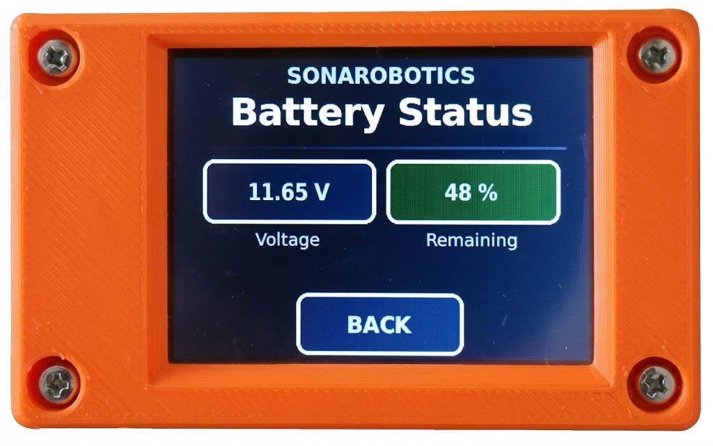

3.2 Güç Açma-Kapatma
Robotu açmak için güç açma-kapatma düğmesini kullanınız.
3.2.1 Güç Açma
Robota bağlanmadan önce gücün açık olduğunu teyit ediniz.

3.2.2 Güç Kapatma
Gücü kapatmak için mutlaka önce robotun işlemcisinin düzgün şekilde kapatılması gerekir. Bunun için iki seçenek kullanılabilinir:
-
•
Robota bağlı olduğu durumlarda, doğrudan Ubuntu 24.02’nin shutdown komutunu kullanmak
-
•
TFT LCD dokunmatik ekran üzerinden SHUTDOWN seçeneğinin seçilmesi ve ekran tamamiyle kapandıktan sonra güç açma-kapatma düğmesini kapalı duruma getirmek gerekir.
Robotun bu şekilde düzgün olarak kapatılmadan güç bağlantısının kesilmesi, robotun belleğindeki dosya sisteminde bozulmalara ve veri kaybına neden olabilir. Bu durum özellikle ROS 2 yapılandırmaları, kayıt dosyaları ve sistem dosyalarının zarar görmesine veya robotun yeniden başlatıldığında düzgün çalışmamasına yol açabilir.
3.2.3 Şarj
Şarj edilebilir batarya, mobil tabana ve bağlı elektronik sistemlere güç sağlar. Şarj ve çalışma süresi bataryanın durumuna ve robotun kullanım şekline bağlıdır. Onaylı şarj ekipmanını robotla birlikte verilen talimatlara uygun şekilde bağlayınız.
Şarj işleminin veya normal çalışmanın devam edip etmediğini belirlemek için TFT LCD Dokunmatik ekran üstünden takip yapılabilir. Bunun için micro-ROS Agent yazılımının çalıştırılması gerekir. Bunun için:
source run_agent_usb.sh
çalıştırılması yeterlidir. İlgili yazılımların kurulumuna ait ayrıntılar Ek A.4’de sunulmuştur.
TFT LCD Dokunmatik ekranda Şekil 3.3(a)’de gösterilen ana menüye gidilerek, BATTERY seçeneği seçilir. Bataryanın voltaj ve kalan şarj yüzdesi Şekil 3.3(b)’de görülen menüden takip edilebilir.
